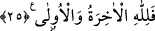

Teâlâ’nın
kullarını
cezâlandırmasının
sebebi,
onların
temennîlerini
elde
etmelerindendir.
25. Âhiret de dünya da Allah’ındır.
Bu âyet kesinlikle insanın temennî ettiği şeyi seçme hakkını ifâde eden bir sebep
cümlesidir. Ayrıca hem âhiret ve hem de dünya işlerinin bir arada Allah Teâlâ’ya tahsis
edilmesinin sebebi de seçilen her işin Allah Teâlâ’nın ihtiyârını gerektirecek olmasıdır.
et-Te’vilâtü’n-Necmiyye’de bu âyete şöyle işâret olunmaktadır: “Bu âyetle Hakk
Teâlâ’nın uhrevî ve dünyevî mülk ve melekûtun; yâni âlemin tamamına hükmettiğine
işâret olunmaktadır. Yâni insan, nefsinin imkân bulup da temennî ettiği şeyi elde
edebilme dışında hiç bir şeye mâlik değildir. Bilakis âhiretin mülkünü elde edebilmesi;
âhireti kazanma yolu olan sâlih amellerin ve güzel fiillerin tahsil edilmesi anlamına
gelen sağ elinin gerektirdiği şeylerin tasarrufuna bağlıdır ki bunu da kendisine Allah
Teâlâ el-Vehhâb ismiyle sağlar. Allah Teâlâ zâtının lütuf ve cemal mazharı kılmak
istediği kişiye bunu bağışlar. Dünya mülkü ise kulun sol elinin tasarrufu altındadır. Onun
bu sol eli; günahı, hasis olan nefse mütâbaatı ve alçak olan tabîata muvâfakatı neşet
ettiren değersiz dünya sevgisinin elde edilmesinin vesîlelerini talep eder. Bunu da
Allah’ın kahr ve celal sıfatlarının mazharı olmasını dileyen kimselere adâletli davranan
Allah âdil ismiyle yapar. Allah bu her iki türdeki insana verdiği lütuf veya kahr sıfatları
ile ne birinin mülkünü fazlalaştırır, ne de aynı şekilde azaltır. Her iki gruptaki insan er-
Rahman’ın sehâvetiyle kuşatılmıştır.
[95]. Irâkî, Muğnî, IV,97.